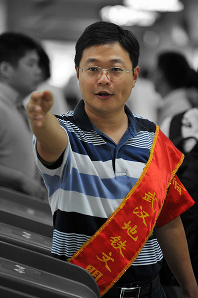

|
| 中国领先的社区综合服务平台
观看视频
武汉首届最美志愿者网络评选大赛、给全市人民留下了个既美好又震撼的回忆
大赛网聚武汉百余志愿组织的优秀代表,百万市民被他们的志愿故事打动，加入到这场武汉人自己的爱心盛会中来。
今年，第二届评选将在10月拉开帷幕届时将会有全新的评选规则、更精彩的志愿者故事
今年也一起期待吧！
活动时间：2015年10月—12月
参选人数：2000名报名者，181名进入投票阶段
投票数：2718909
活动内容：各社区、各志愿组织推选优秀志愿者，云生活平台公开投票，票数前十名获评十佳最美志愿
者称号。武汉市委宣传部副部长等领导出席颁奖典礼，长江日报、武汉电视一套、六套、新浪、网易、
搜狐等各大媒体进行了报道。

胡龙丹35岁
武汉地铁志愿服务总队
志愿宣言: 志愿者就像蒲公英, 播撒文明的种子
地铁呼扯着穿越武汉，一位姑娘坐在车厢里剥着橘子，剥一瓣儿、吃一瓣儿。
其实地铁上的规定是不能吃东西的，只是知道这个规定的人并不多——不过地铁志愿者胡龙丹知道。
“在地铁上吃东西是不文明行为，请您先收起来吧！”胡龙丹上前劝她。
“真是管的宽！”姑娘瞪了他一眼。
又劝了几句，姑娘一急，把橘子皮往地上一扔。“言语上不能让人改变，就用自己的行为来带动他。”做了多年的地铁志愿者的胡龙丹知道，有时候光靠说别人也许不会听。
他走上前把橘子皮捡起来，扔进垃圾桶里，这时姑娘也觉得有些不好意思，态度和善了许多。
“她以后又想在车厢里吃东西，也许会记得有这么一位‘管的宽’的人。”
胡龙丹是武汉第一批地铁志愿者，也是第一批受益于轨道交通建设的人。2004年武汉轨道交通一号线开通，家住宗关的胡龙丹每天会坐轻轨到循礼门转公交到徐东上班。
当时轨道交通刚开通，有人不会买票，有人到处问路，还有人问怎么去洗手间……这些事儿只要胡龙丹遇上了，他总会上去帮帮忙——大学时在团委外联部做义工、工作后也经常参加志愿者活动，与人为善对于他来说是件很平常的事。
真正成为一名地铁志愿者是在2012年。“12月5日，国际志愿者日，2号线刚开通。”胡龙丹记得很清楚，听说地铁要招募志愿者他抢着报了名，继而从5000个报名者中以第一名的成绩脱颖而出。
每周至少两次，在轻轨站、地铁站里倡导文明，为往来乘客提供帮助，身为武汉地铁志愿服务队总队长的他，平时还要操人事管理的心、操大型活动的心。从当上志愿者的那一天起，胡龙丹一直坚持到今天。
胡龙丹笑起来有一个大大的酒窝，许多人在地铁中都看到过这张笑脸。一次，一位残疾母亲带着女儿坐地铁，胡龙丹一路把母女两人送进电梯、送到车上。
这位女儿对胡龙丹说：“我也想加入地铁志愿者！”
胡龙丹的志愿者生涯见过很多大场面，上千人的大型活动、武网公开赛时的闪耀明星……但没有哪句话比这句话让他更有成就感。
其实胡龙丹的加入一开始并不理解他的志愿者工作，家里有老有小的，还忙活这些干嘛啊？后来地铁坐的多了，看胡龙丹做志愿者久了，家里人也渐渐觉得地铁志愿者的存在真是一件特别必要的事情。后来，胡龙丹的姐姐也当上了一名地铁志愿者，他姐姐的女儿也成为了志愿者。
现在胡龙丹和地铁志愿者们在倡导“万名乘客志愿者”的理念，想做志愿者又没有时间的人，通过申请可以拿到“乘客志愿者”的名牌——上车时挂上，在这趟旅程里，你就是志愿者。
“志愿者就像蒲公英，走到哪里，就把文明的种子播撒到哪里。”胡龙丹说。
志愿者用实际行动改变身边的人，一位小姑娘、自己的家人、上万名乘客，也许胡龙丹自己也没有想过——以后还会有多少人因为志愿者而选择不同的人生。
© 2015 武汉云智互联科技有限公司·鄂ICP备15010914号